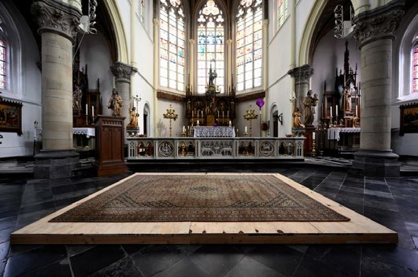
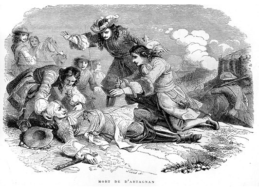

Los restos de d'Artagnan, un héroe de capa y espada hecho famoso por la novela del s.XIX del escritor francés Alexandre Dumas Los Tres Mosqueteros, pueden haber sido encontrados bajo las losetas de una iglesia en Holanda, cerca del campo de batalla donde murió combatiendo hace más de tres siglos y medio. El descubrimiento se hizo a principios de marzo cuando se removieron las losetas de la iglesia de San Pedro y San Pablo para reparaciones, luego que el terreno debajo de ellas se hubiera hundido.

Cuando se publicó en 1844, la novela de Dumas, que evoca las aventuras de los mosqueteros Athos, Porthos, Aramis y d'Artagnan, se convirtió en un éxito de la noche a la mañana. Los tres mosqueteros capturaron imaginaciones y pronto se convirtieron en leyenda. En el siglo XX, se han hecho docenas de películas con la crónica de sus aventuras, y cada época ha nominado su propio d'Artagnan en el papel principal como el noble, valiente y leal mosquetero principal.
Una de las mejores versiones —en mi opinión— se hizo en 1948, cuando el actor y bailarín Gene Kelly encarnó a d'Artagnan en esta versión hollywoodense de Los Tres Mosqueteros. El dinamismo y las acrobacias que realizó Kelly no tienen comparación con ninguno de los otros actores que han encarnado el papel. Compartieron la película con él Lana Turner como la villana Milady, Condesa de Winter, June Allyson como Constance Bonacieux, la contraparte amorosa de d'Artagnan, y Vincent Price como el Cardenal Richelieu.
Un personaje real detrás del mito
Pero d'Artagnan, cuyo nombre real era Charles de Batz de Castelmore, era una persona real. Sirvió como guardia personal de los reyes franceses y particularmente como espía y mosquetero del rey Louis XIV. Un documental francés del 2020 sobre d'Artagnan en el canal germano-francés ARTE muestra que, aún cuando han sido vistos en una luz romántica, los guardias mosqueteros eran de hecho bastante brutales, imponiendo la voluntad del rey durante lo que el film caracteriza como tiempos violentos.
De todas formas, solo los mejores jinetes y espadachines podían dar la talla como mosqueteros, y d'Artagnan era una leyenda, tanto en la novela de Dumas como en la realidad. D'Artagnan era un favorito de Louis XIV y, en 1673, dirigió el sitio del Rey Sol a la ciudad holandesa de Maastricht durante la Guerra Franco-Holandesa. La ciudad amurallada cayó. Pero también cayó d'Artagnan, cuando recibió un disparo de mosquete en la garganta. El monarca le escribió a la reina que había perdido uno de sus mejores y más leales hombres, de acuerdo al documental.

Tres siglos de misterio
Odile Bordaz, una historiadora francesa que ha estado tratando de localizar la tumba de d'Artagnan por décadas, también aparece en el documental ARTE del 2020. "Sabemos que el cuerpo de d'Artagnan fue devuelto a su campamento, y que Louis XIV celebró una misa por él", dice. "Pero nunca nadie dijo qué pasó con su cuerpo después de eso. Es un misterio." Hasta ahora.
Bordaz por mucho tiempo había sostenido la teoría de que el cuerpo del mosquetero estaba enterrado en algún sitio cerca del campamento francés, en vez de haber sido llevado de vuelta a Francia, de forma que el rey Louis XIV pudiera haber asistido personalmente a su entierro. Adicionalmente, mientras los soldados ordinarios eran enterrados en una fosa común, los cuerpos de los oficiales y los nobles descansaban en una iglesia.
El documental muestra a Bordaz visitando la iglesia seis años atrás, donde se encontró con el arqueólogo de Maastricht, Wim Dijkman, que le mostró que el altar casi seguramente ocupaba el mismo lugar que el campamento militar de Louis XIV durante el sitio de Maastricht. El ataque fue masivo, envolviendo casi 50,000 tropas de infantería y caballería así como 58 cañones.
El descubrimiento
Aún así, Jos Valke, un diácono de la iglesia de Wolder en Maastricht, describió su sorpresa con el descubrimiento. "Cuando levantamos esas losetas fue cuando encontramos los huesos", le dijo a la televisión holandesa RTV Maastricht. "Y fue el momento en el que decidimos traer al arqueólogo." Llamaron entonces a Dijkman. Él le dijo a RTV que de hecho había estado haciendo peticiones a los oficiales de la iglesia para dejarle realizar excavaciones en la propiedad desde la reunión con Bordaz años atrás.
Dijkman se muestra confiado en que han encontrado el esqueleto de d'Artagnan. También se encontró una moneda junto con los restos que pertenecía al obispo de Liège que celebró misas aquí todos los días para el Rey Sol. De todas formas, Dijkman quiere estar absolutamente seguro, por lo que están llevando a cabo análisis de DNA para compararlo con los descendientes del padre de d'Artagnan. "Se ha convertido en una investigación importante", le dijo a RTV. "Queremos estar absolutamente seguros, o lo más seguros posible, si este es el famoso mosquetero que cayó cerca de Maastricht o no."
"Todos para uno y uno para todos"
Mientras tanto en París, Cecile Rebillard sigue muy de cerca las noticias. La madre de tres ha traído a su hijo más joven a Les Invalides, el hospital militar del s.XVII fundado por Louis XIV, que es hoy un museo que muestra varias colecciones de espadas y armaduras de mosqueteros. Dice que el descubrimiento es emocionante.
"Todos hemos leído a Dumas," dice. "Es algo que hemos pasado de generación en generación. De forma que encontrar el cuerpo de d'Artagnan es grandioso. Trae la ficción a la vida real." Antes de dejarla, Rebillard sonríe y recita el archiconocido mantra de los mosqueteros que todo escolar francés conoce: "Todos para uno y uno para todos."